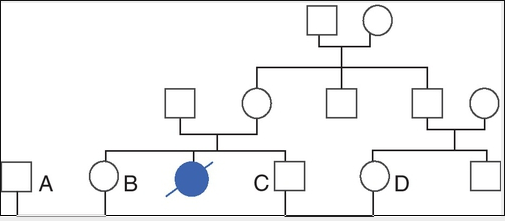
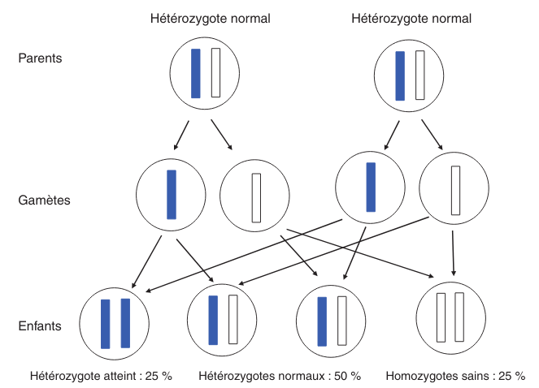
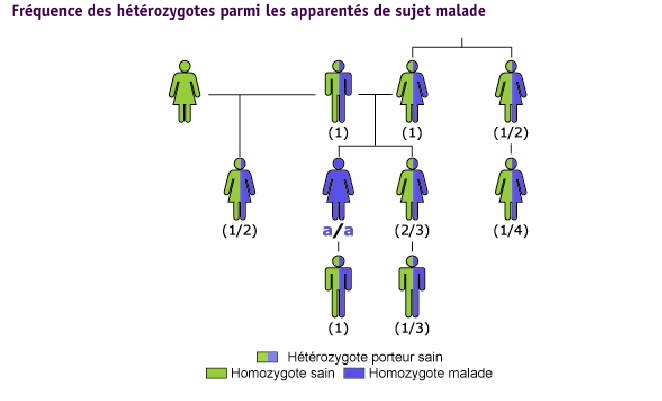
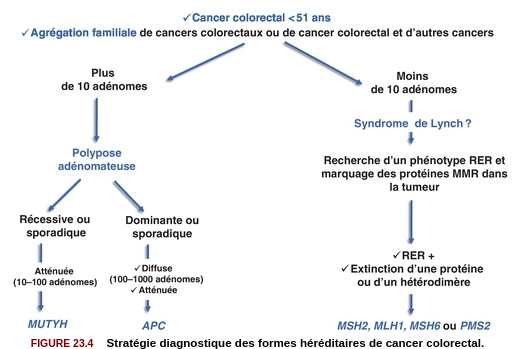

Génétique
Alexis
Chap 2 QCM 5
Le syndrome de Turner :
- Correspond à la nullosomie de gènes portés par le chromosome Y
- Peut se manifester à la naissance par un syndrome de Bonnevie-Ullrich
- Se caractérise par une déficience intellectuelle
- Se caractérise par une taille supérieure à la moyenne
- Peut être dû à des anomalies de structure du chromosome X
Syndrome de Turner
- 45, X
- environ 1/2 500 nouveau-né de sexe féminin
- à la naissance:
- syndrome de Bonnevie-Ullrich = petite taille, un lymphœdème des mains et des pieds et un excès de peau au niveau de la nuque (pterygium colli).
- visible échographie anténale : cardiaque (coarctation de l’aorte), rénales (rein en fer à cheval), anomalie nuque (hygroma kystique)
- enfance : petite taille
- ado : aménorrhée primaire (dysgénésie gonadique pure)
- pas de déficience intellectuelle
- femme adulte, grossesses possibles après don ovocyte
Chap 2 QCM 6
Le syndrome de Klinefelter est caractérisé par :
- Une déficience intellectuelle constante
- La fréquence des mosaïques
- Une infertilité
- L’existence d’un chromosome X surnuméraire
- Des malformations viscérales fréquentes
Syndrome de Klinefelter
- 47, XXY
- prévalence 1/700 et 1/1 000 garçons à la naissance
- diagnostic jamais porté à la naissance
- signes cliniques à la puerté /age adulte sur infertilité
- caryotype
- clinique :
- atteinte testiculaire, avec ou sans signe d’hypogonadisme, petit volume testiculaire+++ => azoospermie
- bio : FSH augmenté, leydig normale
Chap 4 QCM 1 (optionnel)
Concernant la transmission autosomique, quelles affirmations sont vraies ?
- La transmission est de type horizontal
- Le risque de récurrence est de 50 % si un des parents est atteint
- Seuls les garçons sont malades
- Un patient muté peut ne présenter aucun signe clinique
- Un patient atteint aura forcément tous ses enfants atteints
- transmission verticale
- s’exprime chez les hétérozygote => 1 chance sur 2 d’avoir l’allèle atteinte !
Chap 5 QCM 1

Les couples A-B et C-D vous consultent pour un conseil génétique. La sœur de Mme B et de Mr C était atteinte d’une maladie de Hurler. Il s’agit d’une maladie récessive autosomique qui atteint un enfant sur 90 000 naissances (1/90 000) Concernant le risque de Mme B d’être hétérozygote pour la maladie de Hurler, quelle(s) proposition(s) est (sont) exacte(s) ?
- Le risque pour Mme B d’être hétérozygote pour la maladie de Hurler est de 1/2
- Le risque pour Mme B d’être hétérozygote pour la maladie de Hurler est de 2/3
- Le risque pour Mme B d’être hétérozygote pour la maladie de Hurler est de 1/4
- Le risque pour Mme B d’être hétérozygote pour la maladie de Hurler est celui de la population générale
- Ce risque est indépendant du sexe de l’individu

Chap 5 QCM 2
Concernant le risque de Mr C et Mme D d’être hétérozygote pour la maladie de Hurler, quelle(s) proposition(s) est (sont) exacte(s) ?
- Le risque pour Mr C d’être hétérozygote pour la maladie de Hurler est de 1/4
- Le risque pour Mr C d’être hétérozygote pour la maladie de Hurler est de 2/3
- Le risque pour Mme D d’être hétérozygote pour la maladie de Hurler est de 1/4
- Le risque pour Mme D d’être hétérozygote pour la maladie de Hurler est de 1/3
- Le risque pour Mme D d’être hétérozygote pour la maladie de Hurler est de 1/8

Chap 5 QCS 1
En vous servant de la loi de Hardy-Weinberg, quel est le risque que Mr A soit hétérozygote pour la maladie de Hurler ?
- 1/75
- 1/600
- 1/300
- 1/150
- 1/200

\(q^2 = \frac{1}{90 000}\) donc \(q = \frac{1}{300}\).
Or on veut connaître \(2 p q\) et on sait que \(p = 1 - q \approx 1\)…
Chap 5 QCS 2
Quel est le risque pour le couple A-B d’avoir un enfant atteint de la maladie de Hurler ?
- 1/2 400
- 1/1 200
- 1/1 800
- 1/4 800
- 1/900
Probabilité du père de lui passer 1 allèle atteint = \(\frac{1}{150} \times \frac{1}{2}\)
Probabilité de la mère de lui passer 1 allèle atteint = \(\frac{2}{3} \times \frac{1}{2}\)
Chap 5 QCS QCS 3
Quel est le risque pour le couple C-D d’avoir un enfant atteint de la maladie de Hurler ?
- 1/128
- 1/32
- 1/24
- 1/12
- 1/48
Père = \(\frac{2}{3}\times\frac{1}{2}\) et Mère = \(\frac{1}{3}\times\frac{1}{2}\)
Cours
- la cytogénétique s’intéresse à des anomalies de grande taille (chromosome entier ou fragment de chromosomes de plusieurs milliers voire millions de paires de bases), on parle de remaniement ou d’anomalie chromosomique
- la biologie moléculaire s’intéresse à des mutations (on parle aujourd’hui plutôt de variants) concernant un ou quelques nucléotides
Il est donc impossible de détecter une mutation d’un gène en cytogénétique. Les principaux examens de cytogénétique sont :
- le caryotype : analyse non ciblée de l’ensemble des chromosomes, pour détecter des anomalies chromosomiques de nombre ou de structure de grande taille (>5Mb)
- l’Analyse Chromosomique par Puce à ADN (ACPA ou CGH-Array) : analyse non ciblée de l’ensemble des chromosomes, pour détecter des microremaniements chromosomiques (≈100 fois plus précis que le caryotype, sorte de « super-caryotype », même si la technique est complètement différente)
- la FISH (Fluorescence par Hybridation In Situ) : analyse ciblée des chromosomes, permet d’identifier un microremaniement chromosomique (mais on doit savoir à l’avance ce que l’on recherche)
Les principaux examens de biologie moléculaire sont :
- le séquençage Sanger : séquençage classique d’un gène
- le NGS (Next Generation Sequencing) : séquençage à haut débit, permet de séquencer une grande quantité d’ADN de plusieurs patients à la fois ; on peut ainsi séquencer :
- un panel de gènes
- l’exome = parties codantes
- le génome = ADN
Le Southern blot permet l’étude d’un fragment d’ADN particulier au sein du génome après transfert des fragments d’ADN d’un gel d’électrophorèse sur une membrane
Cours
A propos de la prescription des examens génétiques, parmi les propositions suivantes, laquelle (lesquelles) est (sont) exacte(s) ?
- Le patient (ou ses représentants légaux) doit signer un consentement écrit avant l’analyse
- Les examens génétiques ne peuvent pas être pratiqués chez les mineurs
- Les examens génétiques peuvent être pratiqués uniquement chez les patients symptomatiques
- Le prescripteur doit signer une attestation de consultation
- Les résultats d’examens génétiques doivent être rendus en consultation par le prescripteur
Cours
Les examens de génétique peuvent être prescrits uniquement par des médecins généticiens ou par des spécialistes appartenant à une équipe pluridisciplinaire en collaboration avec des généticiens.
Ils sont prescrits au décours d’une consultation, après information claire, loyale et appropriée du patient et/ou de ses représentants légaux. Un consentement écrit signé par le patient ou les représentants légaux est nécessaire. Le prescripteur doit également signer une attestation de consultation, dans laquelle il déclare avoir délivré l’information nécessaire au patient ou à ses représentants légaux quant à la nature des examens réalisés, les résultats et leurs implications.
Les analyses de génétique se font le plus souvent à partir d’un prélèvement sanguin périphérique. Parfois, l’analyse d’un autre tissu est indiquée (prélèvement salivaire, biopsie d’un organe atteint) : recherche d’une mosaïque, pathologie touchant préférentiellement certains organes, analyses du génome tumoral…
Les résultats sont toujours rendus en consultation par le prescripteur.
Les examens peuvent être pratiqués chez un patient symptomatique quel que soit son âge, à visée étiologique. Chez les mineurs asymptomatiques, les examens génétiques ne sont pas indiqués sauf si le résultat a un impact direct sur le pronostic du patient et/ou sa prise en charge. Chez les adultes, on peut être amené, dans certaines situations spécifiques, à effectuer des analyses génétiques chez des patients asymptomatiques :
- diagnostic pré-symptomatique
- conseil génétique de pathologie autosomique récessive (« porteurs sains »)
- recherche d’hétérozygotie dans un cadre pré-conceptionnel en cas d’antécédent familial de pathologie autosomique récessive ou chez le conjoint d’un patient hétérozygote
- fausses couches à répétition (≥3) pour recherche de translocation équilibrée
- …
Chap 23
QCM 5 Quelle(s) est/sont la/les caractéristique(s) des cancers du sein associés aux mutations du gène BRCA1 ?
- La rapidité évolutive
- Le profil triple négatif vis-à-vis des récepteurs aux œstrogènes à la progestérone et de l’amplification d’ERBB2
- Une sensibilité particulière aux inhibiteurs de PARP
- Leur présentation multifocale
- Leur bon pronostic
Chap 27 QCM 1
Dans le cadre du dépistage de la trisomie 21, le calcul du dépistage combiné proposé au premier trimestre est basé sur :
- La mesure de la clarté nucale
- L’âge maternel
- L’âge paternel
- les antécédents d’anomalie chromosomique dans la fratrie
- La présence d’une cardiopathie congénitale
Chap 27 QCM 2
Quel suivi régulier doit être proposé aux enfants porteurs d’une trisomie 21 ?
- ORL
- Ophtalmologique
- Cardiaque
- Urologique
- Orthopédique
Chap 27 QCM 3
Quelle(s) complication(s) est/sont à redouter chez l’adulte trisomique 21 ?
- Sécheresse cutanée
- Cataracte
- Dysurie
- Syndrome parkinsonien
- Syndrome démentiel de type Alzheimer
Chap 27 QCM 4
Quelles complications sont à redouter durant la première année de vie chez un(e) enfant porteur/euse de trisomie 21 ?
- Cataracte
- Leucémie aiguë
- Syndrome de West
- Apnées du sommeil
- Maladie cœliaque
Chap 27 QCM 5
Les enfants porteurs de trisomies 21 sont plus fréquemment soumis à :
- Apnées du sommeil
- Infections
- Tumeurs solides
- Instabilité C1-C2
- Diabète
Chap 27 QCM 8
Quelle(s) est(sont) la(les) malformation(s) digestive(s) la(les) plus fréquente(s) chez un nouveau-né trisomique 21 ?
- Imperforation anale
- Atrésie duodénale
- Atrésie de l’œsophage
- Présence d’une rate surnuméraire
- Mésentère commun
Chap 27 QCS 1
Le diagnostic de trisomie 21 en période anténatale s’effectue avec :
- Le dosage des marqueurs sériques maternels
- L’échographie
- L’âge de la mère
- L’âge du père
- Le caryotype fœtal
Chap 27 QCS 2
Quelle est la malformation à rechercher en priorité à la naissance chez un enfant porteur de trisomie 21 ?
- Cardiaque
- Digestive
- Rénale
- Cérébrale
- Vertébrale
Chap 27 QCS 3
Quel organisme est chargé de l’orientation des enfants trisomiques 21 ?
- SESSAD
- CAMSP
- MDPH
- CLIS
- CDES
Chap 27 QCS 4
Quelle complication biologique doit être recherchée régulièrement chez les enfants porteurs de trisomie 21 ?
- Hyperuricémie
- Anémie
- Hypothyroïdie
- Hypernatrémie
- Protéinurie
Chap 27 QCS 5
Quelle complication néoplasique est à redouter particulièrement chez les enfants porteurs de trisomie 21 ?
- Lymphome
- Sarcome
- Tumeur cérébrale
- Leucémie aiguë myéloïde
- Hépatocarcinome
Chap 29
QCM 1 Concernant le syndrome de l’X fragile, quelles sont les propositions vraies ?
- Il s’agit de la forme de déficience intellectuelle d’origine génétique la plus fréquente
- La macro-orchidie est un élément essentiel du diagnostic chez les jeunes garçons
- Les patients présentent souvent des troubles du spectre autistique
- Certains patients ont un QI dans les normes
- Les conductrices peuvent présenter une déficience intellectuelle
QCM 2 Concernant les prémutations du gène FMR1, quelles sont les propositions vraies ?
- Elles correspondent aux allèles comportant 55 à 250 répétitions CGG
- Le risque qu’elles soient transmises par un homme porteur à toutes ses filles est proche de 100 %
- Elles sont associées à un risque d’insuffisance ovarienne prématurée
- Le risque de syndrome neurodégénératif à début tardif (FXTAS) ne concerne que les hommes
- Elles peuvent passer à la mutation complète lors d’une transmission paternelle
QCS 1 Concernant le syndrome de l’X fragile, quelles sont les propositions vraies ?
- Il est peut-être causé par une mutation ponctuelle du gène FMR1
- Les mutations surviennent le plus souvent de novo
- La CGH-array confirme le diagnostic chez la plupart des patients
- Les caractéristiques faciales ne sont ni constantes ni spécifiques
- Le diagnostic prénatal peut être proposé à une femme dont le conjoint est porteur d’une prémutation
Bonus : PEC BRCA
Prise en charge des femmes porteuses d’une mutation d’un gène BRCA
- À partir de 20 ans, palpation des seins et des creux axillaires tous les 6 mois.
- À partir de 30 ans, ou 5 ans avant le cas de cancer du sein s’il existe un cas avant 30 ans, IRM mammaire annuelle, complétée d’une seule incidence de mammographie.
- Avant 40 ans, en particulier chez les porteuses d’une mutation de BRCA1, après information, temps de réflexion et accompagnement psychologique mastectomie prophylactique.
- Après 40 ans et tout projet parental, annexectomie prophylactique.
Bonus: Lynch

Bonus: PEC MMR
Prise en charge des porteurs et porteuses d’une mutation d’un gène MMR
- À partir de 20 ans, chromocoloscopie complète tous les deux ans.
- À partir de 30 ans, échographie endovaginale avec prélèvement endométrial par Pipelle de Cornier tous les deux ans.
- Après 40 ans et accomplissement du projet parental, hystérectomie avec ovariectomie prophylactique.
Bonus: noms des gènes
| Forme héréditaire de cancer | Gène | Name |
|---|---|---|
| I. Activation constitutive de la cascade de transduction | ||
| Cancer médullaire de la thyroïde (CMT) | RET | REarranged during Transfection |
| Cancer papillaire du rein | MET | Mesenchymal Epithelial Transition |
| Maladie de Cowden | PTEN | Phosphatase and TENsin homolog, |
| Maladie de Von Hippel Lindau | VHL | idem |
| Médulloblastome | SUFU | Suppressor Of Fused Homolog (hedgehog !) |
| Neurofibromatose de type I | NF1 | idem |
| Polypose adénomateuse familiale | APC | Adenomatous Polyposis coli |
| Syndrome de Gorlin | PTCH | PaTCH |
| Tumeur de Wilms | WT1 | Wil’s Tumor |
Bonus 2
| II. Altération des points de contrôles du cycle cellulaire | ||
|---|---|---|
| Rétinoblastome | RB1 | idem |
| Mélanome malin | CDKN2A | Cyclin Dependent Kinase Inhibitor |
| Syndrome de Li-Fraumeni | TP53 | Tumor Protein |
| III. Altération des systèmes de réparation de l’ADN | ||
| Cancer du sein et de l’ovaire | BRCA1, BRCA2 | BReast CAncer |
| Polypose adénomateuse autosomique récessive | MUTYH | Mut Y DNA glycosylase |
| MLH1 | MuLt Homolog | |
| Syndrome de Lynch | MSH | DNA repair MiSmatcH |
| Xeroderma pigmentosum | XP | idem |
Bonus 3
| Autres | ||
|---|---|---|
| Cancers bronchiques | ALK | Activin receptor-Like Kinase 1 |
| Carcinomes colique, bronchiques | KRAS | Kirsten RAt Sarcoma viral oncogene homolog |
| Carcinomes sein, ovaire | HER2 | Human Epidermal growth factor Receptor 2 |
| Carcinomes+++, gliomes | EGFR | Epidermal Growth Factor Receptor |
| GastroIntestinal STromal Tumor | KIT | |
| Leucémies aigües myéloïdes | FLT3 | Fms-Like Tyrosine kinase 3 |
| Leucémies, mélanomes | NRAS | Neuroblastoma-RAS |
| Lymphome de Burkitt | C-MYC | Cellular MYeloCytomatosis |
| Lymphomes du manteau | Cycline D | |
| Mélanome | CD4 | Cluster of differentiation 4 |
| Mélanomes | BRAF | |
| Neuroblastomes | N-MYC | |
| Sarcomes, gliomes | PDGFR | Platelet-derived growth factor receptors |